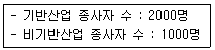
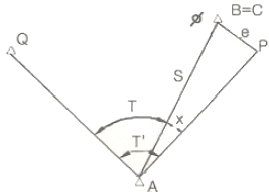
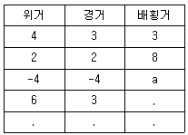
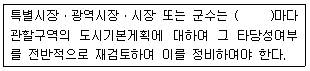
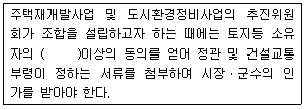

도시계획기사 (2007-09-02 기출문제)
1과목: 도시계획론
1. 다음과 같은 여건을 갖춘 도시의 기반산업이 5년 후 2배로 성장한다면, 도시의 경제는 얼마나 성장하는가?

- 1배
- 2배
- 3배
- 4배
(정답률: 알수없음)

2. 다음 중 시민과 도시정부가 공동으로 공공서비스를 공급하는 공생산(co-production)에 가장 적합한 서비스 유형은?
- 도로수선, 공원, 지하철
- 도시가스, 병원, 주차장
- 범죄예방, 도서관, 노인 및 유아문제
- 경찰, 상수도, 전기
(정답률: 알수없음)
3. 무작위로 추출된 집단의 통행 기점과 종점, 목적, 통행수단, 도착시간 등을 조사하는 교통계획 기법은?
- 기종점조사(OD 조사)
- 교통량 평가
- 중력모델
- 로짓모델
(정답률: 알수없음)
4. 도시 분류 가운데 국토계획상의 분류에 해당되는 것은?
- 거대도시
- 성장거점도시
- 관광도시
- 지정도시
(정답률: 알수없음)
5. 다음 중 우리나라 조선시대의 도시의 성격과 가장 거리가 먼 것은?
- 산업의 중심지
- 군사적 요충지
- 교역의 중심지
- 행정의 중심지
(정답률: 알수없음)
6. 도시를 주민의 압도적인 대부분이 농업이 아닌 공업이나 상업활동에 종사하여 얻어지는 수입으로 생활하는 취락이라고 정의한 학자는?
- Max weber
- Will Durat
- J.M.Cowper
- Lewis Mumford
(정답률: 알수없음)
7. 크리스탈러(W.Christaller)의 중심지 이론에 의하면 도시는 3가지 원리에 따라 작은 중심지에서 큰 중심지로 확대되어 나간다고 한다. 이 원리에 해당되지 않는 것은?
- 시장의 원리
- 주거의 원리
- 교통의 원리
- 행정의 원리
(정답률: 알수없음)
8. 1933년 제 4회 근대 건축국제회의(COAM)에서 제창된 도시의 4가지 기능은?
- 주거, 여가. 노동, 경제
- 주거, 노동, 교통, 경제
- 교통, 주거, 노동, 여가
- 노동, 여가, 주거, 행정
(정답률: 알수없음)
9. 도시교통계획을 수립하는데 있어서의 4단계 수요추정법을 순서대로 가장 올바르게 나타낸 것은?
- 통행발생-통행배분-교통수단선택-노선배정
- 통행발생-노선배정-교통수단선택-통행배분
- 통행발생-교통수단선택-노선배정-통행배분
- 통행발생-노선배정-통행배분-교통수단선택
(정답률: 알수없음)
10. 도시 공간구조 이론에 있어 다핵심이론을 주장한 학자는?
- 버제스(E.Burgess)
- 호이트(Homer Hoyt)
- 팔루디(A. Faludi)
- 해리스와 울만(C.Harris and E.Ullman)
(정답률: 알수없음)
11. 민간부문이 주도적으로 도시공공재를 공급하는 민영화 방식의 장점이라 보기 어려운 것은?
- 외부민간전문인으로부터 특수기술을 제공받을 수 있다.
- 민간업체와의 계약을 통해 서비스공급에 대해 면밀하게 파악할 수 있으므로 도시관리에 관한 정보를 확립할 수 있다.
- 시민의 자원봉사를 기대할 수 있다.
- 민간업체와 도시정부가 서비스공급을 분담할 경우에는 서로를 비교할 기회가 제공된다.
(정답률: 알수없음)
12. 도시의 구성요소를 크게 세 가지로 나눈다면, 다음 중 가장 옳은 것은?
- 사람, 활동, 토지와 시설
- 활동, 토지와 시설, 문화
- 사람, 자연, 문화
- 활동, 토지와 시설, 자연
(정답률: 알수없음)
13. 다음 중 가도시화(pseudo-urbanization) 현상의 특징이 아닌 것은?
- 도시기반시설 부족에 따른 삶의 질 저하
- 취업기회와 정주환경의 불충분
- 고충, 고밀화의 생활문화 형성
- 이농향도민(移農向都民)들의 도시빈민화
(정답률: 알수없음)
14. 순위 규모법칙(rank-size rule)이 정확하게 성립할 경우, 가장 큰 도시의 인구를 상위 5개 도시의 인구로 나누어 수위도시 집중도를 나타내는 수위도(PI: primacy lndex)의 값을 구하면 얼마가 되는가?
- 0.348
- 0.384
- 0.438
- 0.538
(정답률: 알수없음)
15. 도시의 무질서한 확산을 방지하고 도시주변의 자연환경을 보전하여 도시민의 건전한 생활환경을 확보하기 위해 설정한 지구는?
- 특정시설제한구역
- 시가화조정구역
- 시가화예정구역
- 개발제한구역
(정답률: 알수없음)
16. 도시개발이 토지소유자의 자의로 이루어져 개발행위들이 소규모로 산발적이고, 도시기반시설 설치 비용을 과중하게 하는 것은?
- 재개발
- 난개발
- 공영개발
- 신개발
(정답률: 알수없음)
17. 영국의 도시학자인 Ebenezer Howard가 도시생활의 장점과 전원생활의 쾌적함을 동시에 누릴 수 있도록 제시한 ‘전원도시(Garden City)'안에 관한 내용으로 맞는 것은?
- 전원도시의 시가지 패턴을 격자형(grid pattern) 가로망 체계로 구성한다.
- 전원도시의 공간구조는 중심지대에 상업ㆍ업무ㆍ공장을 배치하고, 외곽에는 광장ㆍ시청사 등 공공기관을 배치한다.
- 도시성장과 번영에 의한 개발이익의 일부는 환수하며 계획의 철저한 보존을 위해 토지를 영구히 공유화한다.
- 전원도시의 규모는 약 400ha의 면적에 30만명 정도의 인구를 수용한다.
(정답률: 알수없음)
18. 도시민의 삶의 질을 측정하는 지표가 지녀야 할 특징이 아닌 것은?
- 경제ㆍ사회ㆍ환경을 연계할 수 있을 것
- 지속 가능한 성장과 부합할 것
- 주로 계량적이고, 투입 측면을 측정할 것
- 지표개발과정에서 주민참여기회가 보장될 것
(정답률: 알수없음)
19. 개발권 양도제(TDR : Transfer of Development Right)에 관한 설명으로 적절하지 않은 것은?
- 토지의 소유권과 개발권을 구분하여 거래한다.
- 토지를 소유하지 않은 주민이 유리하다.
- 개발할 토지총량의 한도내에서 개발권을 부여한다.
- 송출지역과 수용지역간 개발이익을 분해한다.
(정답률: 알수없음)
20. 도시개발이 연속적이지 않고 그린벨트, 보전구역 등과 같은 개발이 제한된 구역을 뛰어 넘어 진행 되는 형태의 개발은?
- 내부우선 개발
- 압축 개발
- 비지적 개발
- 저밀도 개발
(정답률: 알수없음)
2과목: 도시설계 및 단지계획
21. 가로에 설치하는 단주(短柱, bollaed)의 바람직한 형태에 대한 설명으로 가장 거리가 먼 것은?
- 바닥 포장의 색깔과 유사한 색상을 사용하여 일치 되게 한다.
- 단주의 높이는 1m 이내가 바람직하다.
- 일시적으로 자동차 출입을 허용하기 위해서 이동시킬 수 있는 단주도 고려한다.
- 조각적으로 만들어 가로 경관을 장식한다.
(정답률: 알수없음)
22. 도로면적이 2000m2, 순 세대 밀도(net household density)가 2.5세대/250m2인 주택 단지의 총 세대수가 100세대 일 경우 주택 단지의 총 면적은?
- 10000m2
- 12000m2
- 15000m2
- 20000m2
(정답률: 알수없음)
23. 지하매설물 중 공동구의 개념을 바르게 설명한 것은?
- 도시 하수처리 시설의 일종
- 특정의 도시 서비스가 제공되는 행정구역상 둘 이상의 지역범위
- 서비스 공급 및 처리시설이 2개 이상 수용되는 지하시설물
- 도시 서비스의 공동생산 구역
(정답률: 알수없음)
24. 토지면적 12000m2에 건축면적 1500m2, 연면적 9000m2아파트를 건축하였다. 이 경우 용적률은 얼마인가? (단, 용적률 : Floor Area Ratio)
- 600%
- 133%
- 75%
- 17%
(정답률: 알수없음)
25. 단지계획에서 비용을 줄이기 위한 일반적인 원칙에 속하지 않는 것은?
- 이동경로의 길이를 최소한으로 줄인다.
- 간선과 지선을 구별해서 가로를 배치한다.
- 완만한 경사와 완만한 커브(curve) 형태의 가로를 배치한다.
- 가구(街區)의 크기를 소형으로 한다.
(정답률: 알수없음)
26. “도시공원 및 녹지 등에 관한 법률”에 의해 도시공원을 세분할 때 이에 해당되지 않는 것은?
- 어린이공원
- 근린공원
- 지구공원
- 소공원
(정답률: 알수없음)
27. “도시개발법”에 의해 도시지역안에 도시개발구역으로 지정할 수 있는 공업지역의 규모는 얼마 이상을 기준으로 하는가?
- 10000m2이상
- 20000m2이상
- 30000m2이상
- 50000m2이상
(정답률: 알수없음)
28. 다음 중 교통의 흐름이 광범하게 분포한 지역에 가장 유효한 체계는?
- 방사상 계통
- 선형 계통
- 격자형 계통
- 방사환상 계통
(정답률: 알수없음)
29. 생활권의 크기가 작은 것부터 바르게 나열된 것은?
- 인보구-근린분구-근린주구
- 인보구-근린주구-근린분구
- 근린분구-근린주구-인보구
- 근린분구-인보구-근린주구
(정답률: 알수없음)
30. “주택건설기준 등에 관한 규정”에 의한 어린이놀이터의 배치 기준으로 적합한 것은?
- 150제곱미터 이상인 어린이놀이터는 건축물의 외벽면으로부터 5미터 이상 떨어진 곳에 배치되어야 한다.
- 100세개 이상인 경우에는 매 세대당 3제곱미터의 비율로 산정한 면적 이상으로 설치하여야 한다.
- 상업지역의 간선도로변에 배치해야 한다.
- 교차로변에 설치하는 어린이놀이터는 그 폭을 5미터 이상으로 하여야 한다.
(정답률: 알수없음)
31. 단지계획에서 건축선의 수직ㆍ수평규제를 하는 주된 목적은?
- 비상탈출(화재 등 재난시)
- 주차장 확보
- 시각적 개방감 확보
- 방풍
(정답률: 알수없음)
32. “도시게획시설의 결정ㆍ구조 및 설치기준에 관한 규칙”에 의하면 도로를 규모별로 구분할 때 소로 1류의 기준으로 옳은 것은?
- 폭 15m 이상 20m 미만인 도로
- 폭 12m 이상 15m 미만인 도로
- 폭 10m 이상 12m 미만인 도로
- 폭 8m 이상 10m 미만인 도로
(정답률: 알수없음)
33. “도시계획시설의 결정ㆍ구조 및 설치기준에 관한 규칙”에 의한 보행자전용도로의 최소 폭은?
- 1.0m
- 1.5m
- 2.0m
- 2.5m
(정답률: 알수없음)
34. 토지의 접지 정도에 따른 주택유형의 분류에 대한 설명으로 틀린 것은?
- 접지형은 단독주택, 연립주택, 중정형 주택 등과 같이 땅에서 접근한다.
- 접지형은 전용 뜰이 있는 주택형식이다.
- 준접지형은 내부의 계단을 통해 접근하며, 전용 뜰이 없는 주택형식이다.
- 비접지형은 아파트처럼 토지와 완전히 분리되어 있으며 공용의 고층공동주택이 이에 해당한다.
(정답률: 알수없음)
35. 슈퍼블록을 구성함으로써 얻어지는 장점이 아닌 것은?
- 건물을 집약화함으로써 고층화ㆍ효율화
- 충분한 공동의 open space 확보
- 보도ㆍ차도 혼용도로로 인한 접근 편리
- 전력ㆍ난방ㆍ하수ㆍ쓰레기 수집 등 도시시설의 공동화가 가능
(정답률: 알수없음)
36. 단지계획의 설계개념(concept) 설정에 가장 중요한 요인은?
- 단지형태
- 단지기능
- 단지입지
- 단지규모
(정답률: 알수없음)
37. 다음의 주차방식 중 1대당 주차 소요면적이 가장 작은 것은? (단, 소형차의 경우)
- 차선에 대해서 30° 전진주차
- 차선에 대해서 45° 후진주차
- 차선에 대해서 60° 전진주차
- 차선에 대해서 90° 후진주차
(정답률: 알수없음)
38. “주택건설기준 등에 관한 규정”에서 공동주택의 배치 시 도로 및 주차장의 경계선으로부터 공동주택의 외벽까지 띄어야 하는 최소 거리는?
- 1미터
- 2미터
- 3미터
- 5미터
(정답률: 알수없음)
39. 다음 중 주거단지의 획지분할 및 배치에 관한 설명 중 틀린 것은?
- 단독주택지의 획지 세장비는 1:1:2 정도가 일반적이다.
- 접근성을 높이기 위해 단지의 간선도로변에는 대형획지보다는 단독주택지를 배치하는 것이 좋다.
- 가구의 길이가 150m를 초과하면 중간에 3~4m의 보행통로를 설치하는 것이 좋다.
- 남북측 가구의 획지는 세장비(깊이/안너비)를 작게 하는 것이 일조권의 확보에 유리하다.
(정답률: 알수없음)
40. 다음 근린시설 중 일반적으로 주택으로부터 이용거리가 가장 짧은 시설은?
- 병원
- 시장
- 보육시설
- 고등학교
(정답률: 알수없음)
3과목: 도시개발론
41. 삼각점 A에 기계를 설치하여 삼각점 B가 시준 되지 않기 때문에 점 P를 관측하여 T' = 68° 32' 15“ 를 얻었을 때 보정각 T는 약 얼마인가? (단, S = 1.3km, e = 5m, ø = 302° 56')

- 69° 21‘ 10“
- 68° 48‘ 07“
- 68° 21‘ 09“
- 69° 48‘ 07“
(정답률: 알수없음)
42. 다음 중 일반적으로 오차론에서 다루는 오차는?
- 정오차
- 착오
- 우연오차
- 누차
(정답률: 알수없음)
43. 트래버스망을 선점할 때 유의할 사항에 대한 설명으로 옳지 않은 것은?
- 노선형(路線形)트래버스는 결합 트래버스가 되지 않도록 할 것
- 측량표가 안전하게 보존될 수 있는 곳일 것
- 측점은 앞으로의 세부측량에 편리한 곳일 것
- 측점은 관측할 때 지장이 없는 곳일 것
(정답률: 알수없음)
44. 수준측량에서 5m표척 상단이 후방으로 30cm 기울어져 있다. 표척의 읽음값이 4m 이었다면 이 관측값에 대한 오차는?
- 약 0.7 cm
- 약 1.5 cm
- 약 3.0 cm
- 약 6.0 cm
(정답률: 알수없음)
45. 축척 1/5000 인 지형도(도면)의 면적을 측정하여 4.8cm2 결과를 얻었다. 이 때 도면의 모든 점이 1.5%가 수축되어 있었다면 실제면적은 얼마인가?
- 11643m2
- 11820m2
- 12183m2
- 12368m2
(정답률: 알수없음)
46. 다음 표의 배횡거 a의 값은 얼마인가?

- a = 6m
- a = 13m
- a = 3m
- a = 10m
(정답률: 알수없음)
47. 광파측거기(EDM)에서 발생되는 오차 중 거리에 비례하여 나타나는 것은?
- 위상차 측정오차
- 반사프리즘의 구심오차
- 반사프리즘 정수의 오차
- 변조주파수의 오차
(정답률: 알수없음)
48. 우리나라 축척 1/50000 지형도에서 515m의 산정(山頂)과 295m의 산정 간에 주곡선(계곡선 포함)은 몇 개가 들어가는가?
- 3개
- 9개
- 11개
- 15개
(정답률: 알수없음)
49. 삼각 수준 측량에서 대기의 굴절에 의한 오차와 지구의 곡률에 의한 오차의 조정은?
- 관측치에 기차와 구차는 모두 낮게 조정한다.
- 관측치에 기차와 구차는 모두 높게 조정한다.
- 관측치에 기차는 낮게 구차는 높게 조정한다.
- 관측치에 기차는 높게 구차는 낮게 조정한다.
(정답률: 알수없음)
50. 삼각망을 구성하는데 있어서 내각을 작게 하는 것이 좋지 않은 이유를 가장 잘 설명하는 것은?
- 한 삼각에 있어서 작은 각이 있으면 반드시 다른 각 중에서 큰 각이 있기 때문이다.
- 경도, 위도 또는 좌표계산이 불편하기 때문이다.
- 한 기지변으로부터 타변을 sine 법칙으로 구할 때 오차가 많이 생기기 때문이다.
- 측각하기가 불편하기 때문이다.
(정답률: 알수없음)
51. 삼각측량에서 기선 선정에 관한 설명으로 틀린 것은?
- 기선은 삼각측량의 정확도에 영향을 미친다.
- 기선길이의 최단한도는 1회 확대 변장의 1/10이 적당하다.
- 소규모 삼각측량에서는 삼각망의 1변을 기선으로 한다.
- 기선을 측정하는 지면의 경사는 1/25 이하로 하는 것이 바람직하다.
(정답률: 알수없음)
52. 축척 1:25000의 지형도에서 제한 기울기를 4%로 할 때 등고선(주곡선)간의 수평거리는?
- 5mm
- 10mm
- 20mm
- 40mm
(정답률: 알수없음)
53. 축척이 1/50000인 지형도 상에 4cm2의 면적은 실제로는 얼마의 면적인가?
- 2km2
- 1.5km2
- 1km2
- 0.2km2
(정답률: 알수없음)
54. 측량기기의 특징에 대한 설명 중 잘못된 것은?
- 디지털 데오도라이트를 이용하여 각을 관측할 경우 각 읽음오차를 소거할 수 있다.
- 전자파거리측량기(EDM)로 거리를 관측할 경우 온도, 습도, 기압에 대한 영향을 보정해야 정확한 거리를 측정할 수 있다.
- 수준측량에 사용되는 레벨의 기포관 강도는 망원경의 확대배율로 표시한다.
- 평판측량에서 사용되는 보통 앨리데이드는 시준공의 직경과 시준사의 굵기에 의해 시준오차가 발생한다.
(정답률: 알수없음)
55. A 및 B점의 좌표가 XA = +70.50m, YA = +120.60m, XB = +150.40m, YB = +630.10m이다. A에서 B까지 결합다각측량을 하여 계산해 본 결과 합위거가 +82.30m, 합경거가 +513.00m이었다면 이 측량의 폐합차는?
- 1.24m
- 2.24m
- 3.24m
- 4.24m
(정답률: 알수없음)
56. 1등 수준측량에서 2km 구간을 왕복한 결과 측정오차가 7mm 발생하였다. 알맞은 처리방법은?
- 오차가 크므로 재촉을 요한다.
- 큰 오차가 발생했다고 생각되는 곳에 분배한다.
- 허용오차 안에 들어가므로 그대로 인정한다.
- 결과를 평균하여 고저차를 결정한다.
(정답률: 알수없음)
57. 전자파 거리 측량기에 대한 설명으로 옳지 않은 것은?
- 전파 거리 측량기는 광파 거리 측량기보다 안개나 비등의 기후에 비교적 영향을 받지 않는다.
- 전파 거리 측량기는 광파 거리 측량기보다 장거리용으로 주로 사용한다.
- 광파 거리 측량기는 광파 거리 측량기보다 1변 관측의 조작시간이 길다.
- 전파 거리 측량기의 최소 조작 인원은 2명이며 광파 거리 측량기는 1명으로도 가능하다.
(정답률: 알수없음)
58. A의 좌표가 (145.32m, 256.22m), B의 좌표가 (-251.11m, -140.21m)일 때 AB측선의 방위각은?
- 45°
- 135°
- 225°
- 315°
(정답률: 알수없음)
59. 다음 정밀도와 정확도에 대한 설명 중 옳지 않은 것은?
- 정확도는 관측값이 목표값에 얼마나 접근하느냐의 정도에 따라 결정된다.
- 정밀도는 관측집단의 편차 크기에 따라 결정된다.
- 착오와 정오차가 없다면 정밀도를 정확도의 척도로 사용할 수 있다.
- 확률오차(ro)와 표준편차(mo) 사이에는 mo = ±0.6745 ro의 관계가 있다.
(정답률: 알수없음)
60. 지형도 작성에서 지표면이 낮거나 움푹 패인 점을 연결한 선으로 합수선 또는 합곡선이라 부르는 선은?
- 최대경사선
- 철선(능선)
- 요선(계곡선)
- 경사변환선
(정답률: 알수없음)
4과목: 국토 및 지역계획
61. 사회계획과 지역계획에서 공통적으로 다루지 않는 부분은?
- 사회복지시설부문
- 주거환경개선부문
- 환경오염방지부문
- 노사관게개선부문
(정답률: 알수없음)
62. 우리나라 제1차 국토종합개발계획의 성과로 볼 수 없는 것은?
- 간선도로망의 확충
- 수자원의 종합개발
- 공업기반의 확충
- 지방중소도시의 육성
(정답률: 알수없음)
63. 다음 중 지역계획의 형성배경과 가장 관계가 먼 것은?
- 지역적 문제의 심각성을 인식하고 개선코져 했던 계획적 노력과 이론적 발전
- 산업화 및 도시화에 따른 지역의 기능적인 문제 발생
- 지역주의 또는 지방주의에 부응하는 지역계획에 대한 요구 증대
- 고도 경제성장에서 발생한 산업간 성장 격차
(정답률: 알수없음)
64. 지역개발에 있어서 기본 수요 접근(basic needs approach)의 개념에 대한 설명과 가장 거리가 먼 것은?
- 주로 1970년대 이후에 등장한 새로운 개발 패러다임이다.
- 발전된 개발도상국보다는 빈공층이 많은 저개발국가에 더욱 적합한 개발 이론이다.
- 소단위 생활권을 대상으로 형평성보다 능률선을 강조하는 개발 이론이다.
- 밑으로부터 접근(bottom up approach)을 강조하는 생활권 전략이다.
(정답률: 알수없음)
65. 다음 중 우리나라에서 국토개발의 제약조건과 가장 거리가 먼 것은?
- 국토의 협소
- 인구의 과밀
- 노동인구의 과다
- 자연자원 부족
(정답률: 알수없음)
66. 어떤 국가가 지프(Zipf)의 순위-규모법칙(eank-size rule)에 따른 순위규모분포(q = 1)를 따른다고 할 때, 수위 도시의 인구가 100만명이면 제 4순위의 도시의 인구는 얼마나 되리라 예상되는가?
- 40만명
- 33만명
- 25만명
- 20만명
(정답률: 알수없음)
67. 다음 중 국토 및 지역계획이 갖고 있는 내용상 특성을 가장 잘 표현하고 있는 것은?
- 공간계획의 성격보다는 경제계획의 성격이 강하다.
- 전문분야별 계획(도로, 산업, 환경 등)을 열거한 계획이다.
- 공간계획인 동시에 전문분야별 계획으로서 종합계획이다.
- 산업진흥 중심의 계획이다.
(정답률: 알수없음)
68. 지역정책수립을 위한 지역설정의 방법 중 핵심지역과 주변지역의 관계를 고려하여 지역을 구분한 것은?
- 중핵지역, 낙후지역, 침체지역, 과밀지역
- 중핵지역, 상향적 과도지역, 하향적 과도지역, 자원변경지역, 특수문제지역
- 중핵지역, 동질지역, 결절지역, 계획지역
- 번성지역, 잠재적 침체지역, 개발도상 침체지역, 침체지역
(정답률: 알수없음)
69. 다음 중 국토계획의 개념을 가장 바르게 설명한 것은?
- 국토계획은 국토에서 일어나는 여러 가지 경제활동의 공간적 배분문제를 다루는 경제계획이다.
- 국토계획은 특정한 지역을 계획 대상으로 하는 계획이다.
- 국토계획은 하위계획과 구체적인 집행계획에 지침을 제시하는 지침 제시적인 계획이다
- 국토계획은 지방정부가 계획수립의 주체가 되는 계획이다.
(정답률: 알수없음)
70. 다음 중 개발권 양여제도(T. D. R.)에 대한 설명으로 옳지 않은 것은?
- 미국 뉴욕시에서 고안된 것으로 역사적 건조물의 보전을 위해 시행되었다.
- 어떤 토지에 규정되어 있는 개발허용한도 가운데 미사용 부분을 다른 토지에 이전하여 토지이용을 실현하는 권리이다.
- 실제 적용된 예는 많지 않으나 보전과 개발, 재개발과의 조화를 도모할 수 있는 제도이다.
- 토지이용의 분산을 도모하기 위한 것으로 대도시 문제해결을 위해 도입된 제도이다.
(정답률: 알수없음)
71. 다음 중 결절지역에 대한 설명으로 옳지 않은 것은?
- 행정조직에 근거
- 계층구조
- 지역내 기능적 관계
- 상호 의존적, 보완적 관계
(정답률: 알수없음)
72. 다음 산업입지학파 중 성격이 다른 접근방법은?
- 최소비용학파
- 입지상호의존학파
- 시장영역학파
- 일반균형학파
(정답률: 알수없음)
73. 다음 중 지역계획 수립의 단계별 일반 순서로 가장 적합한 것은?
- 기본계획→구상계획→실시계획→평가→사업계획
- 기본계획→구상계획→사업계획→실시계획→평가
- 구상계획→기본계획→실시계획→사업계획→평가
- 구상계획→기본계획→사업계획→실시계획→평가
(정답률: 알수없음)
74. 지역계획 수립과정에서 지역인구 예측모형을 위한 요소모형으로 적합한 것은?
- 선형모형
- 연령 계층별 생존모형
- 지수모형
- 곰페르츠모형
(정답률: 알수없음)
75. 중심지 이론에서 중심지 개념의 기초가 되는 시장권의 크기를 결정하는 요인이 아닌 것은?
- 재화나 용역생산의 규모의 경제의 크기
- 재화나 용역에 대한 수요의 밀도
- 수송비용의 크기
- 시장중심의 수
(정답률: 알수없음)
76. 여러 종류의 산업들이 한 지역에 성장하면서 각 기업들이 얻게 되는 생산 코스트의 절감 효과는?
- 운송 경제 효과
- 규모 내부 경제 효과
- 규모 외부 경제 효과
- 관리 경제 효과
(정답률: 알수없음)
77. 도시관리계획으로 지정할 수 있는 용도지구가 아닌 것은?
- 특정용도제한지구
- 시설보호지구
- 개발진흥지구
- 택지개발예정지구
(정답률: 알수없음)
78. 다음의 용도지역안에서의 건폐율 기준이 옳지 않은 것은?
- 제 1종 전용주거지역 : 50퍼센트 이하
- 제 2종 전용주거지역 : 50퍼센트 이하
- 제 3종 전용주거지역 : 60퍼센트 이하
- 준주거지역 : 70퍼센트 이하
(정답률: 알수없음)
79. 클라센(Klassen)은 인구이동의 공간적 분포를 도시화의 단계에 따라 4단계로 구분하고 있다. 다음 중 1990년대 우리나라의 수도권의 인구분포양상을 설명하는 것으로 적합한 것은?
- 도시집중단계
- 교외화단계
- 탈도시화단계
- 도시간분산단계
(정답률: 알수없음)
80. 베버(A. Webber)의 공업입지 최소비용이론의 세가지 입지인자에 속하지 않는 것은?
- 수송비용
- 노동비용
- 원료비용
- 집적경제성
(정답률: 알수없음)
5과목: 도시계획관계법규
81. 다음 중 도시관리계획에 포함되지 않는 것은?
- 용도지역ㆍ용도지구의 지정 또는 변경에 관한 계획
- 기반시설의 설치ㆍ정비 또는 개량에 관한 계획
- 도시개발사업 또는 정비사업에 관한 계획
- 광역계획권의 장기발전방향을 제시하는 계획
(정답률: 알수없음)
82. 도시개발법에 의하여 도시개발구역으로 지정할 수 있는 규모 기준으로 옳지 않은 것은?
- 도시지역안의 주거지역 : 1만제곱미터 이상
- 도시지역안의 자연녹지지역 : 3만제곱미터 이상
- 도시지역안의 공업지역 : 3만제곱미터 이상
- 도시지역안의 지역 : 30만제곱미터 이상
(정답률: 알수없음)
83. 수도권정비실무위원회의 위원장은?
- 국무총리
- 건설교통부장관
- 건설교통부차관
- 서울특별시장
(정답률: 알수없음)
84. 택지개발촉진법상 토지개발사업을 시행함에 있어 도시개발법에 의한 도시개발을 실시할 수 있는 경우는?
- 당해 지역의 지가가 인근의 다른 택지개발예정지구의 지가에 비하여 현저히 높아, 환지방식 외의 다른 방법으로써는 택지개발이 심히 곤란한 때
- 택지개발예정지구와 도시개발구역이 동시에 결정된 때
- 당해 지역의 토지소유자 및 이해관계인이 동의한 때
- 국가, 지방자치단체, 한국토지공사와 대한주택공사 전부가 사업시행을 원하지 않을 때
(정답률: 알수없음)
85. 하나의 도시공원 안에 설치할 수 있는 공원시설의 부지면적 기준으로 옳지 않은 것은?
- 체육공원인 경우 체육공원면적의 50%를 초과할 수 없다.
- 역사공원인 경우 역사공원면적의 40%를 초과할 수 없다.
- 어린이공원인 경우 어린이공원면적의 60%를 초과할 수 없다.
- 근린공원인 경우 근린원면적의 4%를 초과할 수 없다.
(정답률: 알수없음)
86. 도시계획시설의 결정ㆍ구조 및 설치기준에 관한 규칙에 구분된 도로에 대한 설명으로 옳지 않은 것은?
- 일반도로 : 폭 4m 이상의 도로로서 통상의 교통소통을 위하여 설치되는 도로
- 자전거전용도로 : 폭 1.1m 이상의 도로로서 자전거의 통행을 위하여 설치하는 도로
- 고가도로 : 시ㆍ군내 주요지역을 연결하거나 시ㆍ군 상호간을 연결하는 도로로서 지상교통의 원활한 소통을 위하여 공중에 설치하는 도로
- 보행자전용도로 : 폭 1.2m 이상의 도로로서 보행자의 안정하고 편리한 통행을 위하여 설치하는 도로
(정답률: 알수없음)
87. 환지방식에 의한 도시개발사업에 있어서 용도 폐지되는 종전의 공공시설 용지에 대한 환지계획의 기준은?
- 면적주의
- 평가주의
- 총액주의
- 환지를 정하지 않음
(정답률: 알수없음)
88. 도시공원 및 녹지 등에 관한 법률 및 국토의 계획 및 이용에 관한 법률상 녹지에 대한 설명으로 틀린 것은?
- 각종 사고나 자연재해 등 방지를 위하여 설치하는 녹지를 방재녹지라 한다.
- 대기오염ㆍ소음ㆍ진동ㆍ악취 등의 공해를 방지하기 위하여 설치하는 녹지를 완충녹지라 한다.
- 도시의 자연적 환경을 보전하거나 개선하기 위하여 설치하는 녹지를 경관녹지라 한다.
- 녹지는 국토의 계획 및 이용에 관한 법률상 기반시설에 포함된다.
(정답률: 알수없음)
89. 수도권정비계획법에 의한 인구영향평가를 받아야 할 대규모 개발사업의 기준으로 옳지 않은 것은?
- 계획면적 100만m2이상의 택지개발사업
- 계획면적 100만m2이상의 주택건설사업
- 계획면적 10만m2이상의 도시개발사업
- 계획면적 30만m2이상의 산업단지개발사업
(정답률: 알수없음)
90. 다음의 도시기본계획의 정비기준에 대한 내용 중 ()안에 알맞은 것은?

- 3년
- 5년
- 10년
- 20년
(정답률: 알수없음)
91. 수도권정비계획법상 수도권권역에 포함되지 않는 것은?
- 과밀억제권역
- 성장관리권역
- 개발유도권역
- 자연보전권역
(정답률: 알수없음)
92. 도시지역의 시급한 주택난을 해소하기 위하여 주택건설에 필요한 택지의 취득, 개발, 공급 및 관리 등에 관하여 특례를 규정함으로써 국민주거생활의 안정과 복지향상에 기여함을 목적으로 한 법률은?
- 주택법
- 택지개발촉진법
- 도시개발법
- 도시 및 주거환경정비법
(정답률: 알수없음)
93. 국토의 계획 및 이용에 관한 법률상 각 용도지역안에서의 용적률 기준이 옳지 않은 것은?
- 주거지역 : 50퍼센트 이하
- 상업지역 : 1천500퍼센트 이하
- 공업지역 : 300퍼센트 이하
- 녹지지역 : 100퍼센트 이하
(정답률: 알수없음)
94. 산업단지로 개발된 토지나 시설을 분양 또는 임대받을 자를 선정함에 있어, 산업시설 용지를 우선적으로 선정 받을 수 있는 자에 속하지 않는 것은?
- 수도권 과밀억제권역으로부터 이전하고자 하는 자
- 아파트형 공장을 설립하고자 하는 자
- 산업시설용지를 분양받아 임대사업을 영위하고자 하는 자
- 관련 법률의 규정에 의하여 이전을 원하는 공장을 소유하고 있는 자
(정답률: 알수없음)
95. 수도권정비계획법에서 규정하는 광역적 기반시설의 내용으로 옳지 않은 것은?
- 대규모 개발사업지구와 주변 도시간의 교통시설
- 환경오염방지시설 및 폐기물처리시설
- 용수공급계획에 의한 용수공급시설
- 대규모 개발사업지구내의 주요간선교통시설
(정답률: 알수없음)
96. 개발밀도관리구역에 대한 설명으로 옳지 않은 것은?
- 개발밀도관리구역의 지정기준, 개발밀도관리구역의 관리 등에 관하여 필요한 사항은 대통령령이 정하는 바에 따라 건설교통부장관이 정한다.
- 개발밀도관리구역은 기반시설의 설치가 곤란한 주거 또는 상업지역에만 한하여 지정된다.
- 특별시장ㆍ광역시장ㆍ시장 또는 군수는 개발밀도관리구역안에서 건폐율 또는 용적률을 강호하여 적용한다.
- 개발밀도관리구역을 지정 또는 변경하고자 하는 경우에는 당해 지방자치단체에 설치된 지방도시계획위원회의 심의를 거쳐야 한다.
(정답률: 알수없음)
97. 도시 및 주거환경정비법에 의한 조합 설림에 관한 내용 중 ()안에 알맞은 내용은?

- 2분의 1
- 3분의 2
- 4분의 3
- 5분의 4
(정답률: 알수없음)
98. 도시계획시설의 결정ㆍ구조 및 설치기준에 관한 규칙상 도로의 일반적 결정기준에 대한 설명으로 옳지 않은 것은?
- 도로의 폭은 당해 시ㆍ군의 인구 및 발전전망을 감안한 교통수단별 교통량분담계획, 당해 도로의 기능과 인근의 토지이용계획을 고려하여 결정한다.
- 기존 도로를 확장하는 경우에는 원칙적으로 양측 방향으로 확장하도록 한다.
- 보조간선도로와 집산도로의 배치간격은 250미터 내외로 한다.
- 국지대체우회도로 및 자동차전용도로에는 집산도로 또는 국지도로가 직접 연결되지 않도록 한다.
(정답률: 알수없음)
99. 도시계획시설의 결정ㆍ구조 및 설치기준에 관한 규칙에서 정하고 있는 용도지역별 도로율이 틀린 것은?(오류 신고가 접수된 문제입니다. 반드시 정답과 해설을 확인하시기 바랍니다.)
- 주거지역 : 20퍼센트 이상 30퍼센트 미만
- 주거지역 : 25퍼센트 이상 35퍼센트 미만
- 주거지역 : 10퍼센트 이상 20퍼센트 미만
- 주거지역 : 5퍼센트 이상 15퍼센트 미만
(정답률: 알수없음)
100. 개발제한구역의 지정 및 관리에 관한 특별조치법의 취락지구 특례 및 취락지구 정비에 관한 설명으로 옳은 것은?
- 시ㆍ도지사는 개발제한구역안에 주민이 집단적으로 거주하는 취락을 취락지구로 지정할 수 있다.
- 취락을 구성하는 주택의 수, 취락지구의 경계설정기준 등 취락지구의 지정기준에 관한 사항은 시조례로 정한다.
- 취락지구에서의 건축물의 용도ㆍ높이ㆍ연면적 및 건폐율에 관하여는 반드시 지구단위계획으로 정하여야 한다.
- 취락지구정비사업을 시행하는 경우 대통령령이 정하는 바에 따라 생활편익시설 등을 설치할 수 있다.
(정답률: 알수없음)